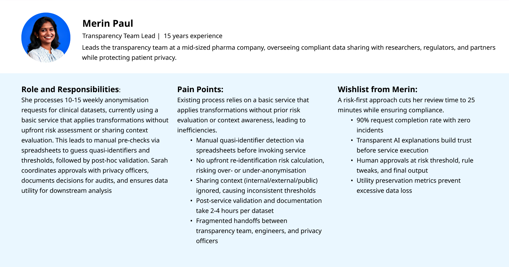
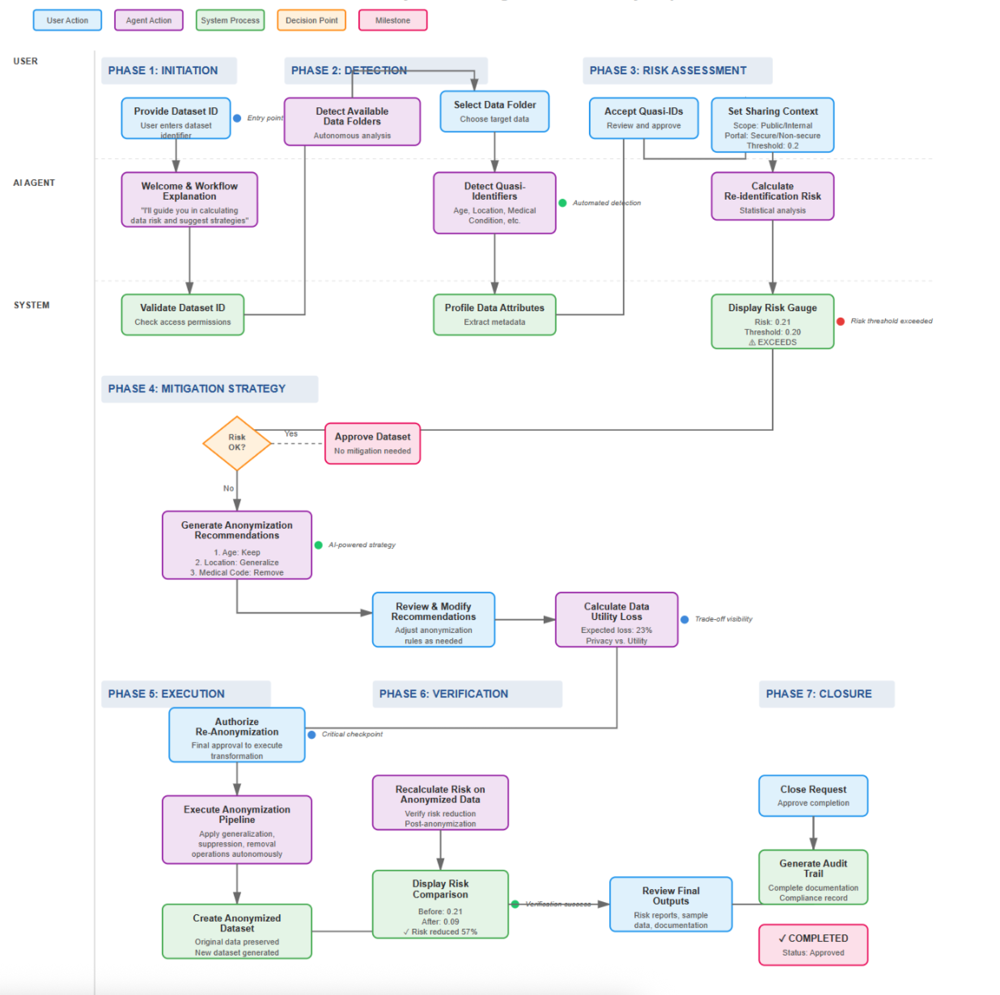

Overview
Design an AI-powered agentic system that democratizes privacy expertise, enabling data engineers to independently conduct risk-based anonymization while maintaining regulatory compliance and maximizing data utility.
This case study showcases the design of an AI-guided anonymization experience for pharma data teams, turning a complex, risky workflow into an AI-orchestrated, human-in-the-loop experience.
Problem Statement
Pharmaceutical organizations struggle to share sensitive patient datasets safely and efficiently while maintaining regulatory compliance and data utility. Existing tools provide technical anonymization functions but don't guide users through the complex decision-making process.
The Pain Points
- Expertise Barrier: Data engineers lack specialized privacy domain knowledge; every request requires privacy officer review.
- Process Inefficiency: 2-4 hours per dataset, multiple tool switches, 40% abandonment rate.
- Privacy-Utility Trade-off: Find the optimal balance between analytic utility and privacy compliance.
- Inconsistent Methodology: Lack of standardized risk assessment across teams.
- High-Stakes Consequences: severe penalties for violations and risks to patient privacy.
Objectives and Goals
Strategic Goals
Agentic UX Design Goals
User Roles and Needs
Data Engineer: Prepares and uploads clinical or operational datasets for anonymization.
Transparency Team: Owns disclosure and anonymization; reviews risk strategies.
Data Governance Lead: Defines policies, risk thresholds, and monitors compliance.
UX Approach
- Discovery: Mapped the current journey, interviewed data engineers and transparency teams.
- Definition: Defined key workflows and the data transaction between user and agents.
- Design: Designed a conversational, stepwise flow orchestrated by an AI agent.
- Validation: Ran walkthroughs with target users using realistic datasets.
Persona
Proposed Solution
A platform that adds intelligent pre-processing: context awareness, automated risk profiling, and an AI agent to compute re-identification risk and suggest anonymization strategies.
Agentic UX Journey Mapping
Reimagining traditional user journeys by layering in AI agent behaviors, decision autonomy, and dynamic orchestration alongside human actions.
Conversational UX
Translating rigid workflows into natural, agent-led dialogues.
Request Initiation
User: Initiates anonymization request with Dataset ID.
Agent: "Hello! I'm here to assist you with risk-based anonymization. I'll guide you in calculating data risk and suggest strategies to mitigate those risks."
Discovery & Detection
Agent: Detects files and automatically identifies Quasi-Identifiers (Age, Location, Condition).
User: Reviews and accepts detected identifiers.
Context & Risk Configuration
Agent: "Can you please provide the data sharing scope and portal details?"
User: Selects scope (e.g., External) and sets Risk Threshold (e.g., 0.2).
Risk Calculation & Report
Agent: Calculates risk (0.21) -> EXCEEDS THRESHOLD (0.20).
User: Reviews risk report and requests mitigation strategies.
Strategy & Utility
Agent: Proposes strategies: Keep Age, Generalize Location, Remove Condition. "Data Utility Loss: 23%."
User: Evaluates trade-off and proceeds.
Execution & Verification
Agent: Executes rules, creates new dataset, and recalculates risk (New Risk: 0.09).
User: Reviews summary: "Original Risk: 0.21, Post-Anonymization Risk: 0.09. Status: WITHIN ACCEPTABLE THRESHOLD."
Agentic UX Design Patterns
- Conversational Workflow Orchestration: Agent guides users through steps using natural language.
- Progressive Disclosure: Information revealed sequentially (Identification -> Risk -> Mitigation).
- Transparent Execution Tracking: Persistent sidebars or checklists to show workflow state.
- Risk Visualization: Gauge-style visuals (Green/Yellow/Red) for immediate feedback.
Success Metrics & Impact
Achieved a 98%+ compliance rate for approved datasets and zero re-identification incidents from anonymized datasets.